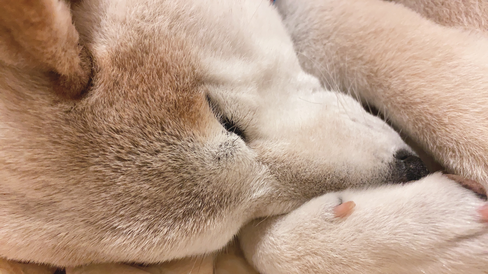

性格について
- 性格
-
- パーティーなどの非日常なことが起こるとビビる
- 花火や雷などの大きな音や得体のしれないものが苦手
- 家の敷地内に侵入者がいると吠えて教えてくれる（むさしの吠える声で宅急便が来たかどうかわかる）
- 散歩しているときは自分のテリトリー外なので一切吠えない
- 散歩中は人がすれ違うと、自分から近寄っていこうとするが、ビビりなので向こうから来られると逃げる
- 人が大好きで、特に女の人が大好きで、女の人だと近づいても逃げないため、愛嬌があるねと言われる
- 疲れたりすると散歩を中断しようとする
- 気分がいい時は、散歩を延長しようとする
- 気分が乗らないときの散歩の帰り道はダッシュで帰宅
- 散歩で通ったことがある道以外はビビりなので行こうとしない
- 散歩から帰ったら、即ソファーに横になって寝る
- ソファーに座りたいときに人が座っていると、無言の圧をかけてくる
- 遊んでほしい時にスマホをいじっていると爪で引っかかれる
- 人が忙しい時に限って、ボールで遊んでほしいとねだる
- 遊んでほしい時や散歩に行きたいときはどんなに人が忙しそうにしていてもキラキラした目で期待のまなざしを向けてくる
- どうしたら人が喜ぶかを知っている
- おやつのためなら「ふせ」などの芸をやってくれる
- 寝るときは人間のように枕を使って毛布を掛けてもらってベットで寝ている
- ベットのど真ん中で寝られるので人が気遣って背中が凝ったりする
- 甘やかして育てた結果、わがままボーイになりました。
- 好きなこと
-
- ご飯を食べる
- おやつを食べる
- 気分が乗る時の散歩
- 真っ白な雪
- ボールで遊ぶ
- おもちゃで引っ張り合い
- 綿が入ったクッションから綿を出す
- 柔らかいボールを粉々にする
- 追いかけっこ
- 朝一に走り回る
- 誰にも邪魔されずに寝る
- 日向ぼっこ
- ゴミ箱を荒らす
- 散歩中に女の人に会う
- 広い場所で走り回る
- 嫌いなこと
-
- 気分が乗らない散歩
- 冬の散歩ルートにある雪の壁
- 雷・花火の音
- パーティー
- 行ったことがない家に行く
- お風呂
- だっこされる
- 首輪をつかまれる
- 薬を飲む
- 睡眠を邪魔される（邪魔されると逃げる）